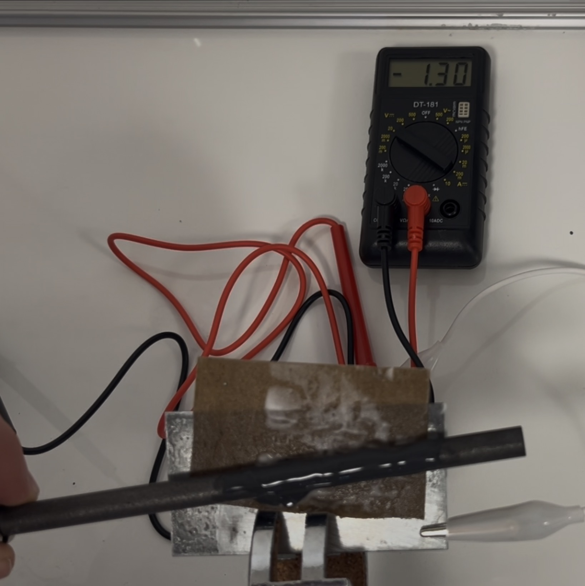

Experiment: Léclanche-Element
Materialien
- Stativ mit Klemme und Muffe
- 2 kleine Bechergläser
- Reagenzglasklammer
- (Lämpchen/Motor)
- Voltmeter
- Kabel
- Krokodilklemmen
- ein Stück dünne Pappe
Chemikalien
- Ammoniumchlorid
- Mangandioxid (Braunstein)
- Zinkblech
- Kohleelektrode
- Stärke
Durchführung
- Zuerst die Elektronen blank schleifen und aus der Pappe eine Platte schneiden, die etwas kürzer ist als die Elektoden.
- Etwa 15 mL Wasser und ein paar gehäuften Spatelspitzen Braunstein vermischen, dann so viel Stärke zugeben, dass eine zähe Paste entsteht.
- Im zweiten Becherglas 20 mL Wasser so lange Ammoniumchlorid beimischen, bis die Lösung gesättigt ist und die Pappe darin tränken.
- Das Zinkblech einspannen und die Pappe darauflegen.
- Die Kohleelektrode mit der Braunsteinmischung beschmieren und auf die Pappe drücken. Jetzt kann mithilfe der Krokodilklemmen, die an die Elektroden angebracht werden, die Spannung gemessen werden. Mit dem Strom kann auch ein Verbraucher wie ein Motor oder eine LED betrieben werden.

Beobachtung
Es lässt sich eine Spannung messen bzw. das Lämpchen / der Motor geht an.
Erklärung
Es findet eine Redoxreaktion statt, bei der Elektronen durch den Verbraucher wandern und ihn so antreiben:
Oxidation: \( \ce{Zn -> Zn^2+ + 2 e^-} \)
Reduktion: \( \ce{2 MnO2 + H2O + 2 e- -> MnO(OH) + 2 OH^-} \)
Gesamtgleichung: \( \ce{2 MnO2 + H2O + Zn → Zn^2+ + MnO(OH) + 2 OH^-} \)